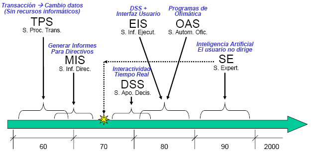

Resumen del tema...
Cada sistema de información está compuesto por una serie de recursos interrelacionados que interactúan y se ordenan de la manera más conveniente de acuerdo con el propósito de información planteado, como la recopilación de información personal, el procesamiento de datos estadísticos, la organización de documentos, etc.

1950 - 1960: procesamiento de datos electrónicos, sistema de procesamiento de transacciones.
Durante este período, el papel del sistema de información era principalmente realizar actividades como el procesamiento de transacciones, el mantenimiento de registros y la contabilidad. SI se utiliza principalmente para el procesamiento electrónico de datos.
EDP se describe como el uso de computadoras para registrar, clasificar, manipular y resumir datos. También conocido como procesamiento de información o procesamiento automático de datos.
Un Sistema de procesamiento de transacciones (TPS) fue el primer sistema computarizado desarrollado para procesar datos comerciales. TPS está dirigido principalmente al personal administrativo de una organización. El TPS inicial utilizó datos por lotes acumulados durante un período de tiempo y posteriormente procesó todas las transacciones.